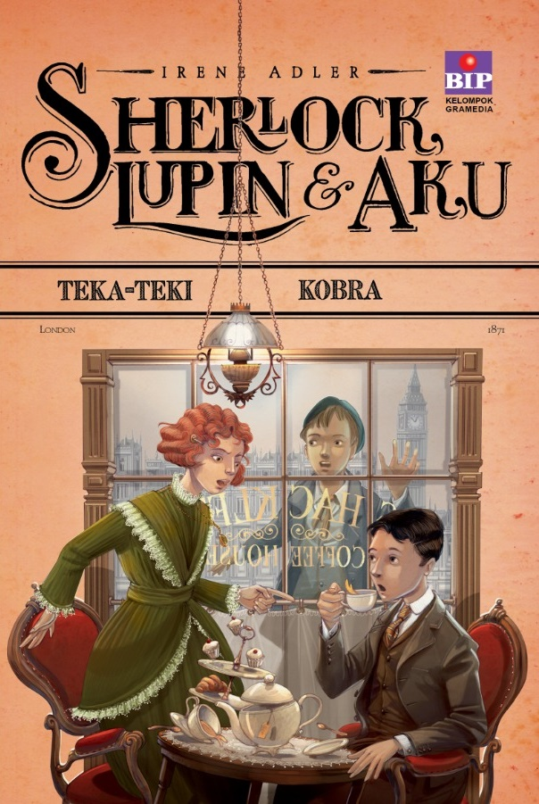

Ayo ikuti perjalanan mereka dengan membaca novelnya disini selengkapnya!
Baca Selengkapnya
Sherlock Lupin & Aku
I r e n e A d l e r
Sherlock Lupin & Aku TEKA-TEKI KOBRA

Sherlock, Lupin dan Aku "Teka-Teki Kobra" adalah Novel ke tujuh dalam novel Sherlock, Lupin dan Aku karya Irene Adler yang diterbitkan oleh Bhuana Ilmu Populer pada 26 Desember 2017. Dalam novel ini mereka dihadapkan pada teka teki rumit kapal Madras Moon yg berujung pada rencana pembunuhan Kobra. Tiga tokoh utama dalam novel ini adalah
Sherlock
,Irene
, danLupin
. Sherlock Holmes merupakan tokoh detektif yang ditulis oleh Sir Arthur Conan Doyle. Irene Adler digambarkan mengagumi kecantikan dan kecerdikan yang dimiliki Irene. Sedangkan Arséne Lupin merupakan tokoh gentleman thief alias pencuri pria dari kalangan atas asal Perancis, yang muncul pertama kali pada tahun 1905.
"Tiga anak luar biasa, sahabat sejati. Tiga otak cemerlang uang mengungkap kisah kejahatan. Serangkaian petualangan yang mendebarkan."
Alessandro Gatti
Salah Satu
penulis Buku
Sherlock Lupin & Aku
Sinopsis Sherlock Lupin & Aku
Setelah pulang ke London bersama ayahnya, Irene tidak sempat berlama-lama merasakan kegembiraan bisa bertemu kembali dengan kedua sahabatnya, Sherlock dan Arsène, sebab tak lama setelah itu terjadi sesuatu yang merusak ketenangan rumahnya. Orazio Nelson, sang kepala pelayan yang sangat disayangi keluarganya, tiba-tiba saja menghilang, setelah meninggalkan sepucuk surat berisikan pesan singkat. Irene yakin perginya Nelson pasti dilandasi oleh suatu alasan kuat, dan dia memutuskan untuk menyelidikinya, dengan bantuan kedua kawannya. Ketiga remaja itu pun lantas terlibat dalam sebuah tindak kejahatan misterius yang terjadi di kawasan Pelabuhan Docks, teka-teki misterius yang tampaknya terkait erat dengan wilayah koloni India yang penuh pesona, nun jauh di sana.